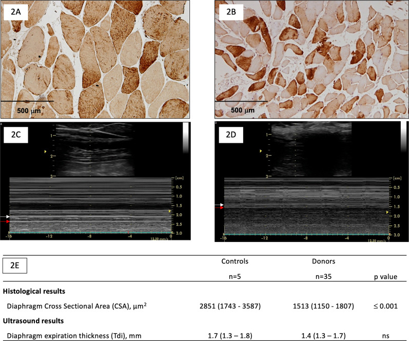
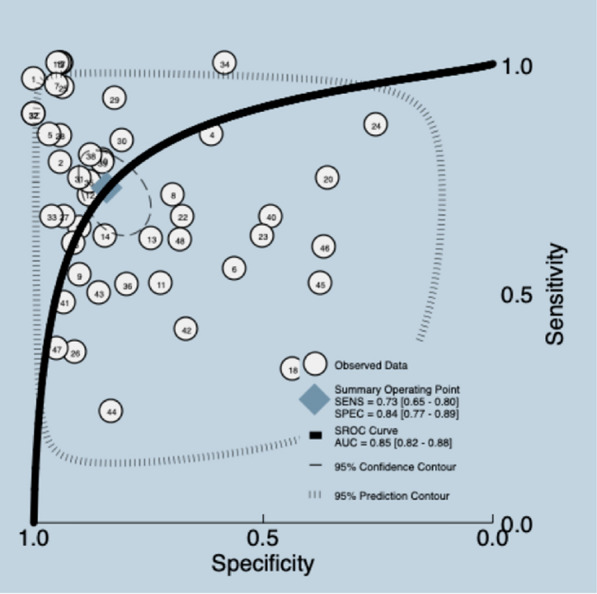
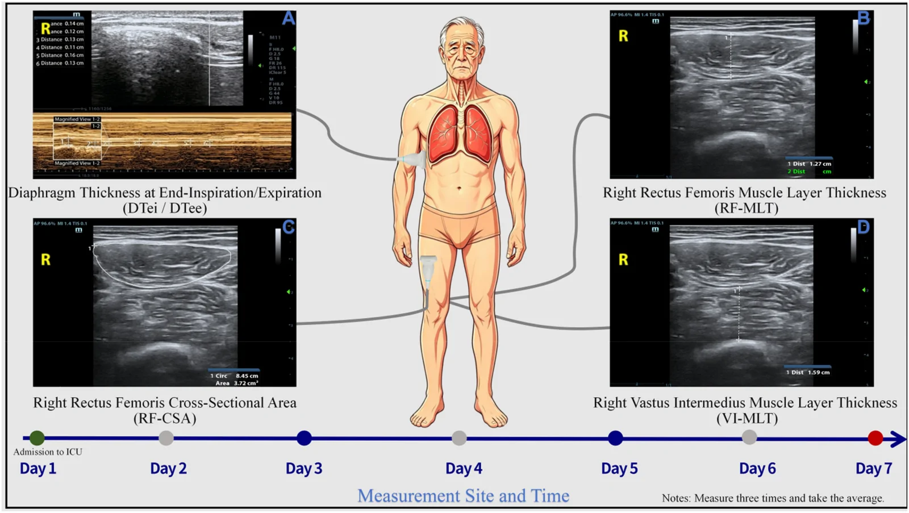

1776 — Bệnh cơ hoành do thở máy / Ventilator-induced diaphragmatic dysfunction (VIDD)
Tags: pattern:teo-co pattern:mat-day-co-hoanh pattern:giam-do-day pattern:yeu-co-hoanh pattern:bai-tho-nghich-thuong vung:co-hoanh vung:phoi score:DTF protocol:SA-co-hoanh protocol:Xquang-tai-giuong protocol:dien-co incidentaloma:khong
Mức chắc chắn (certainty): tổng hợp y văn (literature synthesis) — 1 đoàn hệ 211 bệnh nhân đo độ dày cơ hoành hằng ngày (Goligher 2018), 1 nghiên cứu 7 bệnh nhân về tốc độ mỏng cơ hoành (Grosu 2012), 1 tổng quan cơ chế bệnh cơ hoành liên quan bệnh nặng (Dres 2017), 1 nghiên cứu mô học – siêu âm trên 35 người hiến tạng (Dot 2022), 2 phân tích gộp về siêu âm dự đoán cai máy (1114 bệnh nhân; 2024) và 3 bài có ảnh gốc. Ảnh trong bài là ảnh công bố, giữ nguyên khung.
Câu chốt: thở máy kiểm soát hoàn toàn không phải "nghỉ ngơi" cho cơ hoành — cơ hoành mỏng đi ~6%/ngày, bắt đầu trong 48 giờ, và giảm > 10% độ dày trong 4 ngày đầu làm giảm 31% khả năng cai máy mỗi ngày (HR 0,69 cho mỗi 10% giảm). Nhưng không phải cứ mỏng là do thở máy: phải phân biệt teo do bất động (VIDD) với liệt cơ hoành một bên do tổn thương thần kinh hoành, bệnh cơ/đa dây thần kinh bệnh nặng, và giảm vận động do ứ khí/tràn dịch — vì xử trí khác nhau.
1. Tổng quan bệnh học – cơ chế hình ảnh
1.1 Cơ hoành là cơ hô hấp chính — và là cơ "dùng hoặc mất"
- Cơ hoành là cơ vân có sợi co nhanh và chậm; khi co, nó hạ thấp và dẹt vòm → tạo áp lực âm lồng ngực, kéo khí vào. Vùng áp thành (zone of apposition) là nơi cơ hoành áp sát thành ngực, nên siêu âm đo được bề dày cơ giữa màng phổi (lá thành) và màng bụng.
- Bề mặt cơ hoành trong thì thở ra bình thường 1,5–3 mm; phân suất dày (thickening fraction, TF) = (Tdi hít vào − Tdi thở ra)/Tdi thở ra × 100, bình thường 20–40%; độ di chuyển vòm hoành (excursion, DE) khi thở yên lặng 1–2 cm.
1.2 Hai con đường dẫn đến teo — và vì sao "thở máy nhiều" không bảo vệ
Thở máy kiểm soát / an thần sâu
│
├── Ít/không co cơ hoành (unloading) ──► giảm tải cơ học
│ └── Proteolysis: calpain, ubiquitin–proteasome, autophagy
│ └── TEo cơ (giảm CSA sợi, giảm Tdi)
│
└── Gắng sức quá mức (patient–ventilator asynchrony, P-SILI)
└── Tổn thương cơ do căng (sarcomere disruption, viêm)
└── Yếu + phù cơ, đôi khi dày lên giả tạo- Bất động (disuse): cơ hoành không co trong nhiều ngày → phân giải protein tăng, tổng hợp protein giảm → teo sợi cơ, giảm diện tích cắt ngang (CSA) và bề dày siêu âm.
- Quá tải (over-assist/effort injury): bệnh nhân gắng sức mạnh với máy thở (hoặc P-SILI) → tổn thương sarcomere, phù cơ, viêm → yếu dù cơ dày lên. Vì vậy cơ dày lên cũng là dấu hiệu xấu (Goligher: 24% bệnh nhân tăng độ dày > 10%, cũng kéo dài thở máy).
- Sepsis, corticoid, giãn cơ, dinh dưỡng kém cộng thêm → bệnh cơ hoành liên quan bệnh nặng (critical illness-associated diaphragm weakness), không chỉ thuần "VIDD".
1.3 TẠI SAO siêu âm thấy được — và giới hạn vật lý
- Siêu âm B-mode tần số cao (5–12 MHz): cơ hoành là dải giảm âm kẹp giữa hai đường tăng âm (màng phổi và màng bụng). Đo khoảng cách giữa hai đường ở cuối thì thở ra và cuối thì hít vào.
- M-mode: ghi chuyển động của vòm hoành theo thời gian → đo biên độ (DE) và hướng (bình thường đi xuống khi hít vào; nghịch thường khi liệt).
- Vì sao TF phản ánh chức năng: TF tỷ lệ với mức co và mức gắng sức; nhưng TF phụ thuộc gắng sức — bệnh nhân gắng mạnh bù trừ có thể có TF bình thường dù cơ đã teo. Vì vậy đo ở mức hỗ trợ thấp/NAVA và so với nền, không dùng một giá trị tuyệt đối.
- Vì sao Tdi không đặc hiệu: nghiên cứu mô học – siêu âm trên người hiến tạng cho thấy CSA mô học giảm rõ (2851 → 1513 µm², p ≤ 0,001) nhưng Tdi siêu âm chỉ 1,7 → 1,4 mm, không khác biệt có ý nghĩa. Tức siêu âm bề dày là dấu hiệu thô, bỏ sót teo mức độ sợi.
1.4 Số liệu nền (bắt buộc thuộc)
- Tốc độ mỏng: 6%/ngày ở bệnh nhân thở máy, bắt đầu < 48 giờ (Grosu 2012, 7 ca).
- Tần suất teo: 41% bệnh nhân giảm > 10% độ dày, trung vị ngày 4 (khoảng 3–5); 24% tăng > 10% (Goligher 2018, 191 bệnh nhân).
- Hậu quả: mỗi 10% giảm độ dày → HR 0,69 cho khả năng cai máy hằng ngày; thời gian ICU dài hơn 1,71 lần; biến chứng OR 3,00.
- Vùng TF "tốt nhất": 15–30% trong 3 ngày đầu → thời gian thở máy ngắn nhất. Đây là lý do không để cơ hoành nghỉ hoàn toàn mà cũng không để gắng quá mức.
- Khó cai máy: 20–25% bệnh nhân thở máy gặp khó khăn khi ngừng máy; yếu cơ hoành là nguyên nhân hàng đầu.
2. Mẫu hình + chẩn đoán phân biệt theo vị trí (gamut)
2.1 Bốn mẫu hình siêu âm
| Mẫu hình | Tdi | TF | DE | Nghĩ đến |
|---|---|---|---|---|
| Mỏng + TF thấp | **< 2 mm** hoặc giảm > 10% | < 20% | Giảm | VIDD / teo do bất động |
| Bề dày bình thường + TF thấp | Bình thường | < 20% | Giảm/nghịch thường | Liệt cơ hoành do tổn thương thần kinh hoành |
| Bề dày bình thường + DE thấp, TF bình thường | Bình thường | Bình thường | < 10 mm | Ứ khí COPD, tràn dịch/ascites, đau bụng sau mổ |
| Dày lên + TF thấp/biến thiên | Tăng > 10% | Thấp/không đều | Giảm | Gắng sức quá mức, phù cơ, bệnh cơ cấp |
2.2 Gamut theo nguyên nhân
- Teo do bất động (VIDD): thở máy kiểm soát, an thần sâu, giãn cơ kéo dài; giảm Tdi theo ngày.
- Tổn thương thần kinh hoành: sau mổ tim/ngực, chấn thương cổ, u trung thất, bệnh thần kinh–cơ; một bên, nghịch thường, Tdi bên lành bù.
- Bệnh cơ/đa dây thần kinh bệnh nặng (CIM/CIP): yếu chi kèm yếu hoành; xem bài 1774.
- Bệnh cơ do corticoid: teo loại sợi II, thường không đau, CK bình thường; xem 1774.
- Ứ khí/COPD: cơ hoành dẹt, DE thấp nhưng Tdi/TF bình thường — không phải VIDD.
- Tràn dịch màng phổi/ascites: DE thấp giả tạo do cơ chế học; đo Tdi vẫn được, đừng kết luận teo.
- Giảm drive trung ương: ngộ độc, tổn thương thân não, an thần — TF thấp nhưng cơ không teo; phân biệt bằng đáp ứng với kích thích/giảm an thần.
3. Bảng so sánh phân biệt (ma trận đối chiếu)
| Thực thể (entity) | Hình ảnh điển hình | Chốt vào (rule-in) | Chốt loại (rule-out) | Gợi ý xác nhận |
|---|---|---|---|---|
| VIDD (teo do bất động) | Tdi giảm dần theo ngày, TF < 20%, DE giảm, hai bên | Tdi < 2 mm hoặc giảm > 10% so với nền + thở máy kiểm soát nhiều ngày | Tdi/TF bình thường hoặc chỉ một bên → không phải VIDD | Siêu âm hằng ngày; so với ngày đầu |
| Liệt cơ hoành một bên | Một bên DE giảm/nghịch thường, bên lành tăng bù; Tdi hai bên có thể bình thường | Nghịch thường khi hít vào + một bên | Hai bên đều mỏng, không nghịch thường → VIDD | X-quang sniff test, huỳnh quang, kích thích thần kinh hoành |
| CIM/CIP | Yếu chi + hoành, teo cơ lan tỏa, TF thấp, có thể phù cơ | Yếu đối xứng chi + MRC thấp + điện cơ bất thường | Chỉ hoành, chi bình thường → VIDD/liệt hoành | MRC, điện cơ, CK |
| Bệnh cơ do corticoid | Teo cơ gốc chi, Tdi giảm, CK bình thường, không đau | Tiền sử corticoid liều cao + teo gốc chi + CK bình thường | Đau cơ + CK tăng mạnh → viêm cơ | CK, điện cơ, MRI STIR |
| COPD ứ khí | Hoành dẹt, DE thấp, Tdi bình thường, TF bình thường/thấp | DE < 10 mm + phổi ứ khí + TF bảo tồn | Tdi mỏng dần + TF rất thấp → VIDD | X-quang/CT, phế thân ký |
| Tràn dịch/ascites | DE thấp giả tạo, Tdi bình thường | Dịch lượng lớn + DE thấp nhưng TF bình thường | TF < 20% + Tdi mỏng → bệnh cơ thật | Siêu âm màng phổi/ổ bụng, chọc dịch |

Đối chiếu mô học và siêu âm ở người hiến tạng: A/B lát cắt ngang cơ hoành (A: nhóm chứng; B: người hiến có teo), C/D siêu âm đo Tdi, E bảng số. CSA mô học 2851 → 1513 µm² (p ≤ 0,001) nhưng Tdi siêu âm 1,7 → 1,4 mm (không khác biệt) — siêu âm bề dày bỏ sót teo ở mức sợi. Nguồn: Dot I et al., J Intensive Care 2022;10:40 (PMC9392308), CC BY 4.0.4. Protocol siêu âm + ngưỡng cai máy
4.1 Kỹ thuật đo (làm đúng mới có số đúng)
- Đầu dò: linear 5–12 MHz (người lớn gầy) hoặc convex ở người béo; B-mode là đủ, M-mode cho DE.
- Vị trí: vùng áp thành, khoảng liên sườn 8–10, đường nách giữa/bên, bên phải dễ hơn (cửa sổ gan); bên trái qua lách.
- Cách đo: vuông góc với cơ, 3 lần lấy trung bình, ở cuối thì thở ra (Tdi thở ra) và cuối thì hít vào (Tdi hít vào). Ghi rõ mức hỗ trợ thở lúc đo.
- DE: đo biên độ vòm hoành trên M-mode hoặc B-mode, bên phải, từ đáy thì thở ra đến đỉnh thì hít vào.
- Điều kiện lý tưởng: bệnh nhân tỉnh, hợp tác, không gắng quá, PEEP thấp, không có tràn khí dưới da.
4.2 Ngưỡng định lượng
| Chỉ số | Ngưỡng bình thường | Ngưỡng bất thường / dự báo |
|---|---|---|
| Tdi cuối thở ra | 1,5–3 mm | < 2 mm** hoặc **giảm > 10% so với nền = teo |
| TF (phân suất dày) | 20–40% | < 20% = rối loạn chức năng; 15–30% là vùng "an toàn" khi thở máy |
| TF dự báo cai máy | — | ≥ 30–36% gợi ý cai máy thành công |
| DE | 1–2 cm | < 10–12 mm gợi ý cai máy thất bại |
| DTF (phân tích gộp) | — | Se 0,73 (0,65–0,80) · Sp 0,84 (0,77–0,89) · AUC 0,85 (0,82–0,88) |

SROC tổng hợp: DTF có Se 0,73 · Sp 0,84 · AUC 0,85 cho dự báo cai máy — tốt hơn DE và RSBI trong phân tích gộp 2022. Nguồn: Grillo-Ardila CF et al., J Intensive Care 2026;14:14 (PMC12874667), CC BY 4.0.4.3 Thuật toán cai máy dựa trên siêu âm
flowchart TD
A[Bệnh nhân sẵn sàng thử cai máy] --> B[Siêu âm cơ hoành: Tdi, TF, DE]
B --> C{TF < 20% hoặc Tdi < 2 mm?}
C -->|Có| D[Chưa cai: giảm an thần, giảm hỗ trợ dần, dinh dưỡng, vận động]
C -->|Không| E{DE < 10 mm?}
E -->|Có| F[Tìm nguyên nhân cơ học: ứ khí, tràn dịch, đau, PEEP cao]
E -->|Không| G[Thử nghiệm thở tự nhiên SBT]
G --> H{Thất bại?}
H -->|Có| D
H -->|Không| I[Rút ống nội khí quản]
4.4 Dự phòng và điều trị — bằng chứng hiện có
- Giữ nhịp thở tự nhiên ở mức vừa: mục tiêu TF 15–30% trong 3 ngày đầu; tránh kiểm soát hoàn toàn kéo dài và tránh gắng sức quá mức.
- Giảm an thần, tránh giãn cơ kéo dài, giảm PEEP khi có thể, vận động sớm.
- Tập cơ hít vào (inspiratory muscle training) và kích thích thần kinh hoành có thể cải thiện ở chọn lọc, nhưng chưa có bằng chứng cứng giảm tử vong.
- Không có thuốc đặc hiệu được chứng minh; corticoid không điều trị VIDD (và có thể gây teo cơ — xem 1774).
5. Biến thể bình thường và cạm bẫy
- Đo sai vị trí: đo ở vòm hoành thay vì vùng áp thành → không thấy hai đường màng, số đo vô nghĩa.
- Không vuông góc: đầu dò xiên → bề dày giả tăng; luôn chỉnh vuông góc và đo 3 lần.
- TF phụ thuộc gắng sức: bệnh nhân gắng bù có TF bình thường dù cơ teo; đo ở mức hỗ trợ thấp và so với nền.
- Thay đổi thể tích/dịch: PEEP cao, tràn dịch, ascites làm DE thấp giả tạo; đừng quy cho teo cơ.
- Mô học ≠ siêu âm: Tdi 1,4 mm vẫn có thể là teo nặng trên mô học; bề dày bình thường không loại trừ teo sợi.
- Trẻ em/trẻ sơ sinh: giá trị Tdi/DE thấp hơn người lớn (DE bình thường có thể 0,7–1,0 cm); không áp ngưỡng người lớn.
- Một bên ≠ hai bên: liệt hoành một bên có Tdi hai bên gần bình thường; phải xem hướng chuyển động và so sánh hai bên.
- Satisfaction of search: thấy "cơ hoành mỏng" rồi dừng — phải tìm nguyên nhân gây teo (an thần, giãn cơ, sepsis, corticoid) và nguyên nhân cai máy thất bại khác (tim, phổi, dinh dưỡng).

Kỹ thuật đo Tdi cuối thì hít vào/thở ra (DTei/DTee) ở vùng áp thành, so sánh với cơ đùi; thời điểm đo ngày 1–7. Đây là cách chuẩn hóa để phát hiện teo tiến triển. Nguồn: Chen X et al., Front Med 2026;13:1892704 (PMC13624071), CC BY 4.0.6. Tự lượng giá — Blind Quiz
Ca 1 — Nam 70 tuổi, thở máy kiểm soát 6 ngày sau viêm phổi, cai máy thất bại 2 lần. Siêu âm cơ hoành:
- Gợi ý: chú ý hai đường tăng âm và dải giảm âm ở giữa; đo ở vùng áp thành, không phải vòm hoành.
- Câu hỏi: đo Tdi ở thì nào? Ba ngưỡng cần nhớ? Vì sao bệnh nhân này có thể đã teo cơ hoành dù chưa có gì bất thường trên X-quang?
Bấm để hiện đáp án (findings + chẩn đoán)
- Findings: dải cơ hoành giảm âm giữa màng phổi và màng bụng; đo Tdi cuối thở ra và cuối hít vào → tính TF.
- Chẩn đoán: nghĩ VIDD khi Tdi < 2 mm** hoặc **giảm > 10% so với nền, TF < 20%, DE < 10 mm; ở bệnh nhân này thở máy kiểm soát 6 ngày, teo ~6%/ngày là rất khả dĩ.
- Vì sao X-quang bình thường: X-quang chỉ thấy vòm hoành, không thấy bề dày cơ; teo cơ hoành là chẩn đoán siêu âm, không phải X-quang.
- Nguồn ảnh: Chen X et al., Front Med 2026;13:1892704 (PMC13624071), CC BY 4.0.
Ca 2 — Nữ 55 tuổi, thở máy 4 ngày, nghi teo cơ hoành. Bảng SROC dưới đây dùng để chọn chỉ số nào?
- Câu hỏi: DTF hay DE dự báo cai máy tốt hơn? Đọc Se/Sp/AUC và nêu một lý do DTF có thể dương tính giả.
Bấm để hiện đáp án (findings + chẩn đoán)
- Findings: DTF: Se 0,73 · Sp 0,84 · AUC 0,85; DE và RSBI thấp hơn trong phân tích gộp.
- Chẩn đoán: ưu tiên DTF khi đánh giá cai máy, nhưng không dùng một mình: TF phụ thuộc gắng sức, nên bệnh nhân gắng mạnh có thể có TF cao dù cơ teo (dương tính giả cho "cơ còn tốt"), và ngược lại an thần/đau làm TF thấp dù cơ bình thường.
- Cách dùng đúng: đo ở mức hỗ trợ thấp, so với nền, kết hợp Tdi, DE, RSBI và đánh giá lâm sàng.
- Nguồn ảnh: Grillo-Ardila CF et al., J Intensive Care 2026;14:14 (PMC12874667), CC BY 4.0.
Bài liên quan chéo
- 001 – Tổng quan hệ Ngực
- 098 – Barotrauma & tràn khí màng phổi áp lực ở bệnh nhân thở máy
- 1774 – Bệnh cơ do corticoid & bệnh cơ bệnh nặng ở ICU
- 6100 – Chăm sóc và cai ống mở khí quản ở trẻ
- 045 – Thành ngực & hoành
Không dùng để chẩn đoán độc lập khi chưa có người hướng dẫn.